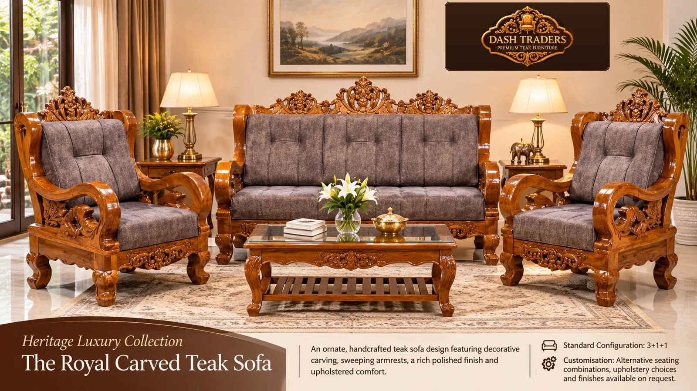
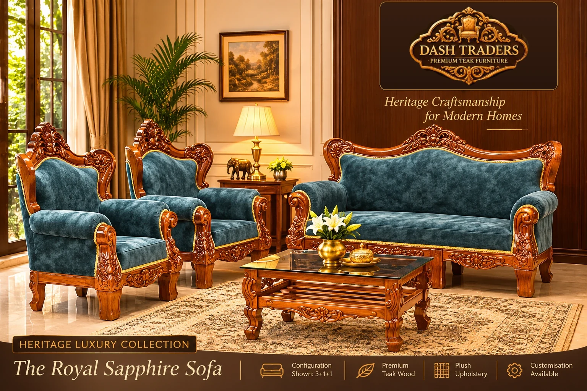
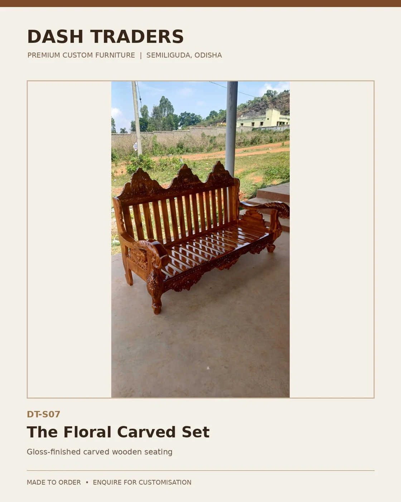

Gallery 01
The Royal Carved Teak Sofa
Ornately carved teak-style frames, sculpted scroll arms and grey upholstered seating.
Enquire about this design →Explore traditional carved seating and contemporary sofa designs from Dash Traders, based in Semiliguda, Koraput, Odisha.

Ornately carved teak-style frames, sculpted scroll arms and grey upholstered seating.
Enquire about this design →
Elaborate carved side panels and deep blue floral-patterned upholstery.
Enquire about this design →
Curved, carved wooden frames with rich sapphire-blue upholstery.
Enquire about this design →
Traditional curved wooden armrests, carved crest detailing and taupe upholstered cushions.
Enquire about this design →
Warm polished wooden frames with curved armrests and taupe-grey tufted upholstery.
Enquire about this design →
A floral-carved crest, scroll armrests and teal upholstered cushions.
Enquire about this design →
Ornate carved side panels, an exposed slatted wooden seat and decorative backrest.
Enquire about this design →
A modern wooden-frame sectional with light-grey upholstery and a right-side chaise.
Enquire about this design →Contact Dash Traders to discuss your made-to-order teak sofa.
Contact Dash Traders